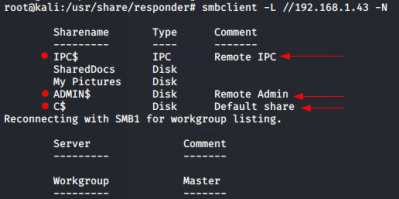
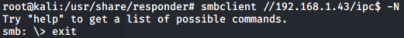
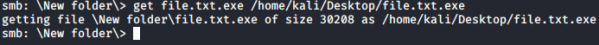

smbclient (connect to smb shell)
1. Enumerate the shares
Once we know, with nmblookup tool, that a machine has the File Server service running (<20>), we can enumerate the shares
smbclient -N -L <address>
-L → services that are available on a target
//<address> → target IP address
-N → suppress password prompt
ERROR:
If on Linux we receive the error "Protocol negotiation failed: NT_STATUS_IO_TIMEOUT"
edit /etc/samba/smb.conf and under global settings add the following lines:
client min protocol = CORE #SMB1 version used by Windows 2000, XP, Server 2003
client max protocol = SMB3 #SMB3 used by Windows 10
client max protocol = SMB3 #SMB3 used by Windows 10

smbclient also displays administrative shares that are hidden when using Windows standard tools(NET VIEW). The hidden shares have a $ sign at the end
2. Connect and Check for Null Session vulnerability
Similar to "net use" and “net view” of Windows
Check to login to all the Shares found!
◇ Option1:
smbclient //<address>/ipc$ -N #Linux target
smbclient \\\\<address>\\ipc$ -N #Windows target
smbclient \\\\<address>\\ipc$ -N #Windows target

The host is vulnerable in this case because we are able to login without credentials.
◇ Option 3: Login normally if we have the credentials
smbclient -U '<username>'%'<password>' \\\\10.10.10.182\\Data
3. Post Connection
◇ Mount a directory on the attacker machine
root@kali:/# mkdir <local-directory>
root@kali:/# mount -t cifs \\\\192.168.13.26\\[remote-directory] [local-directory]
root@kali:/# ls -l <local-directory>
root@kali:/# mount -t cifs \\\\192.168.13.26\\[remote-directory] [local-directory]
root@kali:/# ls -l <local-directory>
This require the “cifs-utils” package in this case. “cifs-utils” can be installed by issuing an “apt install cifs-utils” command from your shell (assuming you’re on a Debian-based distribution)
If it require username and password we can
root@kali:/# mkdir <local-directory>
root@kali:/# mount -t cifs \\\\192.168.13.26\\[remote-directory] [local-directory] -o rw,vers=1.0,user=[username],password=[password]
root@kali:/# ls -l <local-directory>
root@kali:/# mount -t cifs \\\\192.168.13.26\\[remote-directory] [local-directory] -o rw,vers=1.0,user=[username],password=[password]
root@kali:/# ls -l <local-directory>
◇ Alternative: Copy only a file on the loacal machine <---
get <file> /home/kali/Desktop/<file>

◇ Alternative: Recursive copy of the files and folders
Download all the files listed in the actual folder, preserving the structure of the directories inside
smb> cd <folder>
smb> ls
smb> recurse ON
smb> prompt OFF
smb> mget *
smb> ls
smb> recurse ON
smb> prompt OFF
smb> mget *
We can use a tool like tree to see the structures of the folders
root@kali:/# tree